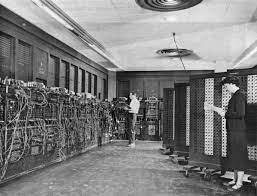
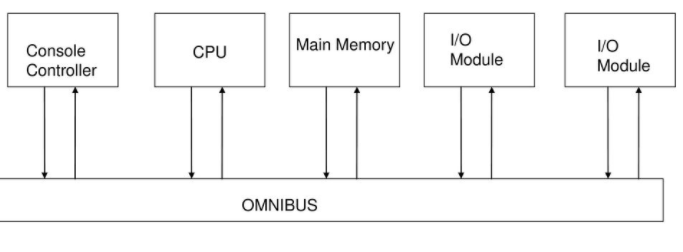

1er génération (1945-1957)
•Von Neumann
•Pas d’OS
•Programmé manuellement
•Lent / Fragile
•30T, 500m²
•1800 tubes

2ème génération (1958-1964)
•MS-DOX/UNIX
•IBM 7094
•TRANSISTOR:
-1960
+ petit
+fiable
- cher

3ème génération (1965-1971)
•Point positif:
-Coûts + performance (circuit intégré)
-Compatibilité
-Multi-tâches
-Structure en bus du PDP-8
•Point négatif:
OS énorme + complexe
